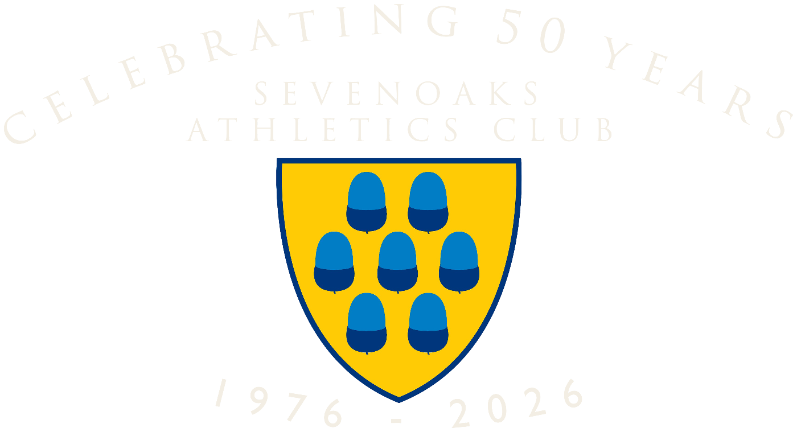
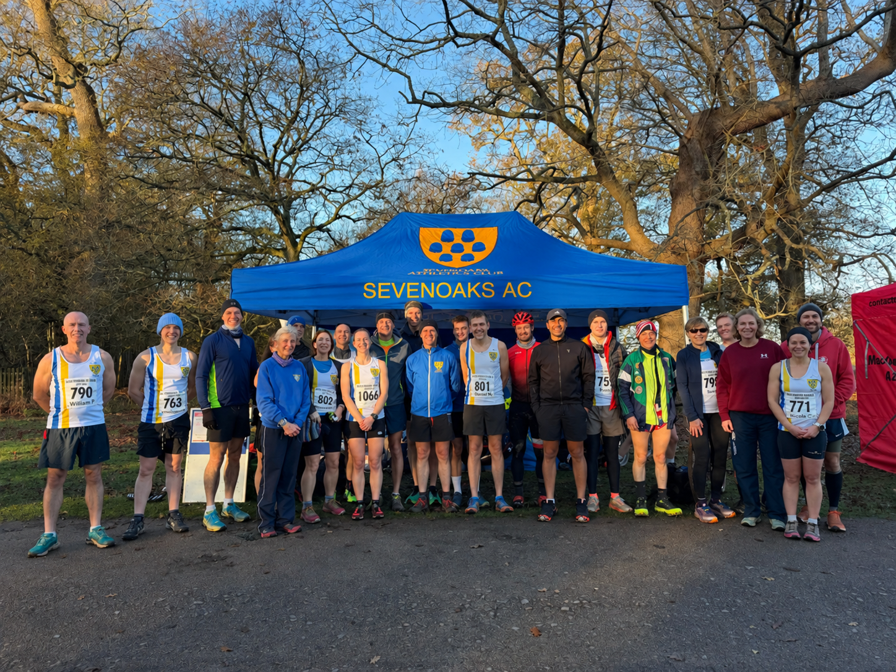

Run together
Join our regular Tuesday club runs, with a choice of Speedy and Steady groups and different distances to suit your training.


Run together, train together and be part of the team.
A friendly, welcoming club for runners and athletes who enjoy training together, challenging themselves and being part of a team — on the roads, in the park, and on the track.
There’s plenty to get involved with:
Join our regular Tuesday club runs, with a choice of Speedy and Steady groups and different distances to suit your training.
Mix up your running with structured sessions designed to build speed, strength and endurance, including Thursday evening intervals on the school track.
There’s more to athletics than distance running. Try sprints, middle and longer distances, jumping and throwing, develop new skills and, if you fancy it, compete as part of the Sevenoaks AC team.
Pull on your Sevenoaks AC vest and race for the club. From the Kent Fitness League and Kent Grand Prix to cross country, parkrun, track and field and club events, there are plenty of opportunities to get involved. Series we race →
Long runs, weekend trails, club challenges and other sessions pop up throughout the year, often shaped around upcoming races and what members are training for.
Running is better with company. Train with familiar faces, celebrate each other’s achievements and enjoy the social side of being part of a running club.
Race every weekend or never race at all — how much you get involved is entirely up to you.
Club runs, track sessions and weekend training to keep your running varied.
Tell us a little about your running and which evenings you’re free, and we’ll match you to a Speedy or Steady group and make sure a leader is there to welcome you. Your first three sessions are free.
Contact us to come along
The next races on the club calendar.
Loading what’s next…

Our own seven-mile race through Knole Park each July, plus a free 3.5k for 9 to 15 year-olds. Next edition: July 2027.
More information →
The junior section is for 9 to 17 year-olds. They train on Tuesday evenings at Sevenoaks School in two groups: under 11s and over 11s. We currently have a waiting list and are not offering taster sessions until athletes start Year 5.